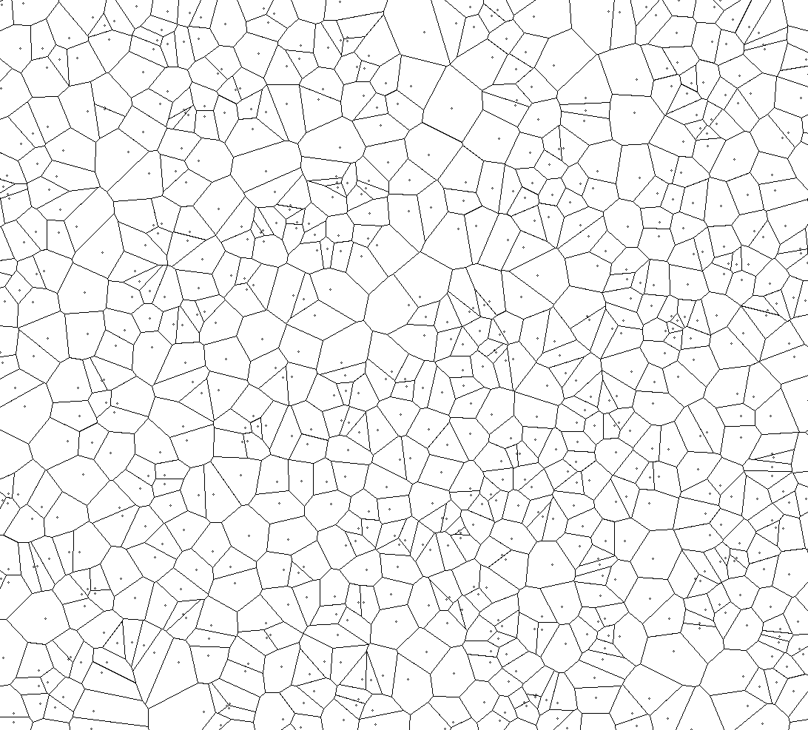
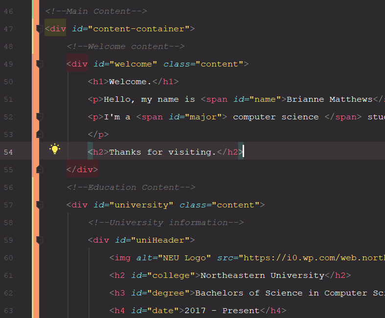
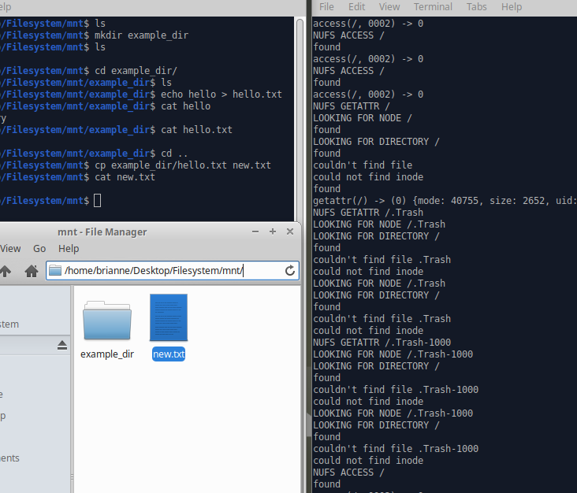
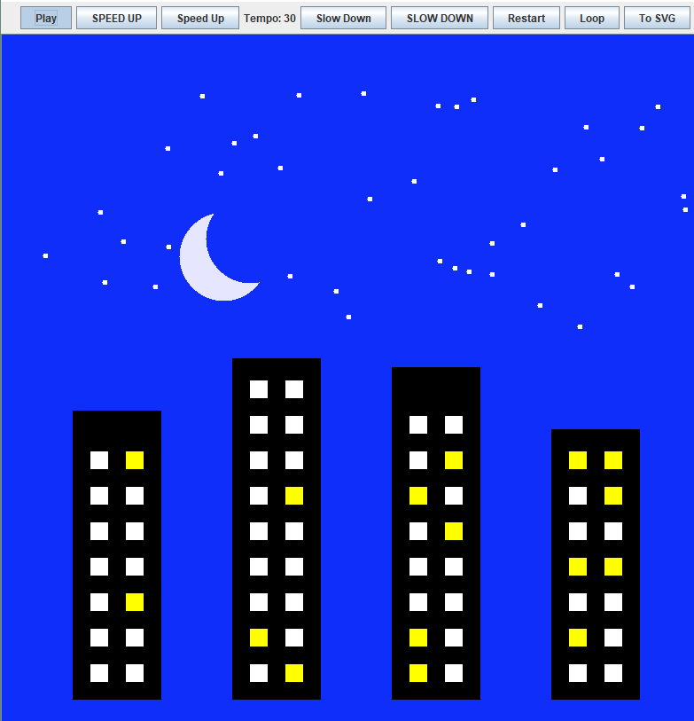

Welcome.
Hello, my name is Brianne Matthews.
I'm a 2nd year Computer Science student, and this is my website.
I plan on graduating with my Bachelor's in 2020. In the meantime, I'm excited to learn as much as I
can in the broad field of CS. I've worked in various languages including Java,
Python, and C++, and I've
recently been learning more about AI and
web development.
Feel free to keep scrolling if you want to hear more.
Thanks for visiting.

VORONOI DIAGRAM
Java
As a fun personal project, I implemented Fortune's Algorithm to generate Voronoi diagrams. It uses
parabolas to partition a plane based on starting points. I also added a UI that allows a user to add and
remove points at random or where the user clicks.

PERSONAL WEBSITE
HTML
CSS
JavaScript
For fun and as a way to learn about web development, I created this website. I taught myself HTML, CSS
(SASS), and plain Javascript then designed and created this website from scratch all in less than a week.

FILE SYSTEM
C
For my Computer Systems class, I designed an ext2 filesystem using the FUSE framework. It supports
basic reading and writing of large and small files as well as more complex functionality such as
permissions, timestamps, and nested directories.

ANIMATOR
Java
For my Object-Oriented Design class, I created a Java application that allows the user to create
animations using basic shapes. I designed a UI that allows viewing the animation with the added
functionality of changing speed, jumping in time, and looping. When done, the user can export the
animation.